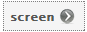
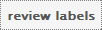
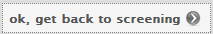
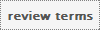
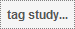

Table of Contents
The Big Picture
abstrackr is a web-application that makes citation-screening process of systematic reviews easier (or, we hope it does, anyway). It is a collaborative tool that facilitates screening of citations by multiple reviewers in tandem. Citations are imported and then screened by participants. The screening decisions (or, 'labels') can subsequently be exported. We'll now define some abstractions that are used within abstrackr, to help you understand how best to work with the system.
There are two main types of things in abstrackr: reviewers and reviews. The former are people like yourself, and the latter (sometimes referred to as projects), are collections of citations to be screened by reviewers. Each reviews is lead by a special reviewer; the associated project lead. All other reviewers associated with a given projects are participants.
The work-flow in abstrackr is centered around assignments, which are created by project leads. In the simplest case, the same assignment is tasked to all participants in a review (including the lead): this assignment is, essentially, to screen until all abstracts have been labeled. More advanced types of assignments exist, but we'll cover these later.
Joining a Review
To join a review in abstrackr, you'll need a join link (URL). This URL should have been sent to your e-mail, either by the abstrackr system or by your project lead. The URL will look like this:
Where the last part of the URL will depend on the review. Simply follow this link in your web browser and you will be automatically joined to the corresponding review.
Getting to Work
The main screen with which you're greeted upon joining a review is shown above. There are two tabs: My Work and My Projects: for now, we'll focus on the former. The My Work tab shows your assignments. Outstanding (unfinished) assignments will be at the top of the page; any completed assignments will be displayed below these. If you are participating in multiple reviews, you may see multiple assignments from them; the 'review' column of the table specifies to which review the corresponding assignment belongs.
To get screening, you'll want to click the  button in the actions column of the assignments table. You can also review the labels (screening decisions) you have given thus far to the abstracts comprising the corresponding assignment, via the .
Screening
We now explain how to screen abstracts in abstrackr. You will likely spend the majority of your time in the system screening, so we will go over the functionality available here in detail. The screening view is shown below.
Figure 1. The main screening interface. The main functional components are circled and labeled (A, B, C): their functionality is described below.
Screening abstracts
In abstrackr you screen an abstract by pushing a button that communicates the label you want to give it. The available labels for abstracts are: relevant, borderline and irrelevant, and correspond to the three buttons in the A panel of the above screen-shot, respectively. The first and last of these are likely self-explanatory: they correspond to accepting and rejecting the abstract. The borderline label, to which the button with the "?" in the screenshot corresponds, implies that you are uncertain about whether or not the abstract should be included or not. Abstracts labeled as maybe can be reviewed at a later time.
Once you screen an article, the label you provided will be saved and abstrackr will immediately fetch a new abstract for you to screen from the database. You can review your labels at any time via the button (located to the upper-right of the abstract), which will take you to the following screen
Here you can review all of the labels you've assigned to the abstracts comprising the associated assignment (thus far). You can re-label an abstract by clicking on its title. You will then be shown the corresponding abstract within the screening page (Figure 1). From here you can re-label the abstract however you'd like: the label will be updated. When you've finished, you can click the  button from either the review labels page or from the re-labeling screening view: this will bring you back to normal screening mode.
Labeling terms
In addition to screening (labeling) abstracts, you may also wish to indicate that certain terms are indicative that the abstract containing them is more likely to be either relevant or irrelevant to your question (e.g., 'mouse', 'randomized control') than it would be if the corresponding term were not present. abstrackr can remember such terms and highlight them for you in abstracts as you screen. To label terms in the system, use panel B as follows. First, enter the term you would like to highlight in the text box. Next, press the button that corresponds to what you deem appropriate for said term.
There are four options here. A term may be (strongly) associated with relevant articles, i.e. its presence in an abstract (greatly) increases the likelihood that said abstract ought to be included; or the reverse may be true, in which case its presence in abstracts (weakly or strongly) correlates with studies to be excluded from the review. These four options -- indicative of relevance, strongly indicative of relevance, indicative of irrelevance, strongly indicative of irrelevance -- are captured by the four `thumbed' buttons to the right of the term text-field in panel B (also shown above), respectively: one thumb up designates a term as indicative of inclusion, two thumbs as strongly indicative of inclusion, etc. Once a term is labeled, it will be highlighted in abstracts with a color corresponding to its label. You can review your terms via the  button, which will take you to a screen that includes this table:
Tags
Another form of annotation available in abstrackr is tagging. Tags are managed in panel C (Figure 1). They are intended to be used flexibly, and can be thought of as additional 'labels' that can be assigned to abstracts. Abstracts may have multiple tags. Tags can be exported with your labels, and in the future you will be able to review all abstracts with a given tag.
As an example, suppose you want to tag certain abstracts as being randomized control trials (RCTs). To do so, click the  button. A window will pop-up, in which you may enter "RCT". This is shown below.
Click the 'tag' button. The tags panel will then be updated so that it appears like this:
If you change your mind about the tag, click again. You will then see
You can toggle this tag on/off by clicking it. When the tag is highlighted (yellow), this means that it applies to the current abstract, otherwise it does not. The same applies to new abstracts; when they first appear, they are by default 'untagged', so that all tags will be de-selected (i.e., not highlighted). You can toggle on all appropriate tags by clicking the button, and then clicking on those that apply.